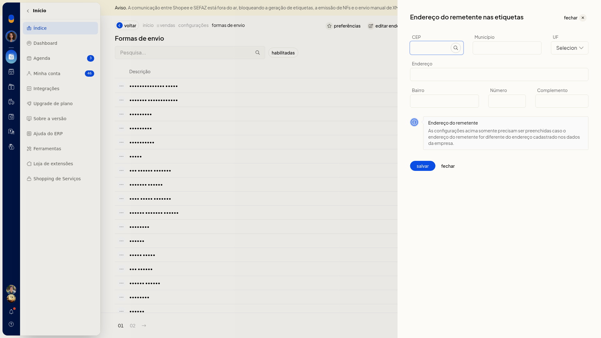
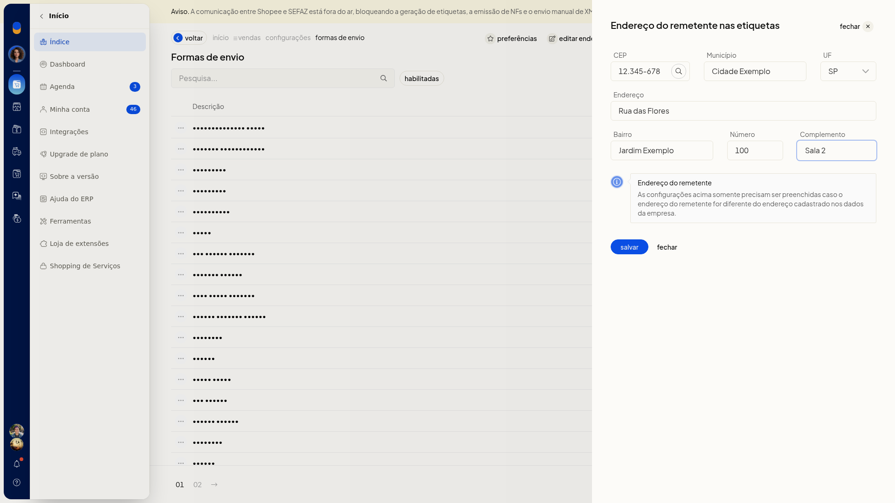

Editar o endereço do remetente nas etiquetas
No ERP da Olist, o endereço do remetente nas etiquetas é o que sai impresso quando esse endereço é diferente do cadastro da empresa. Você informa CEP, município, UF, logradouro, bairro, número e complemento.
Pré-requisitos
- Se a opção não aparecer para você, peça acesso ao administrador da conta.
Importante
- Preencha o endereço somente se ele for diferente do endereço da empresa.
- Fechar encerra o painel sem gravar.
Instruções
-
Acesse Configurações > Configurações ERP > Vendas > Formas de envio.

-
Clique em Editar endereço do remetente.

-
Preencha os campos. Nenhum deles é obrigatório.
-
CEP: formato 12.345-678
-
Município
-
UF: uma UF brasileira ou EX
-
Endereço
-
Bairro
-
Número
-
Complemento

- Clique em Salvar. Para sair sem gravar, clique em Fechar.